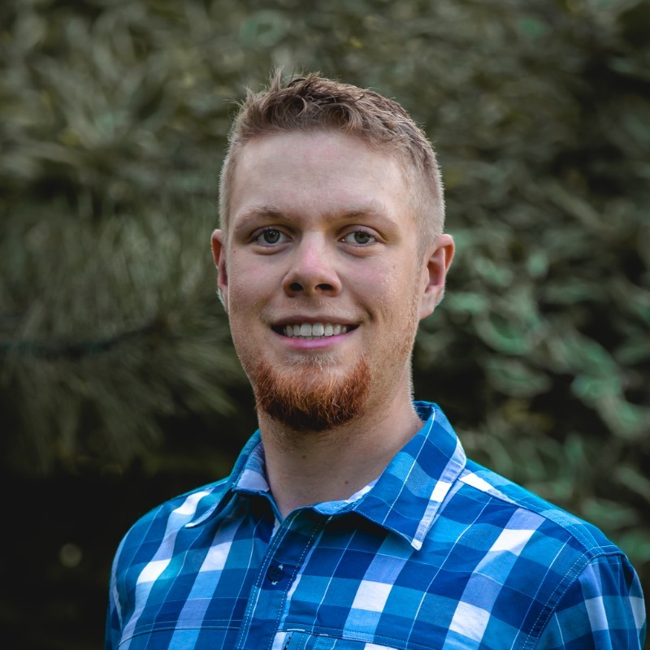
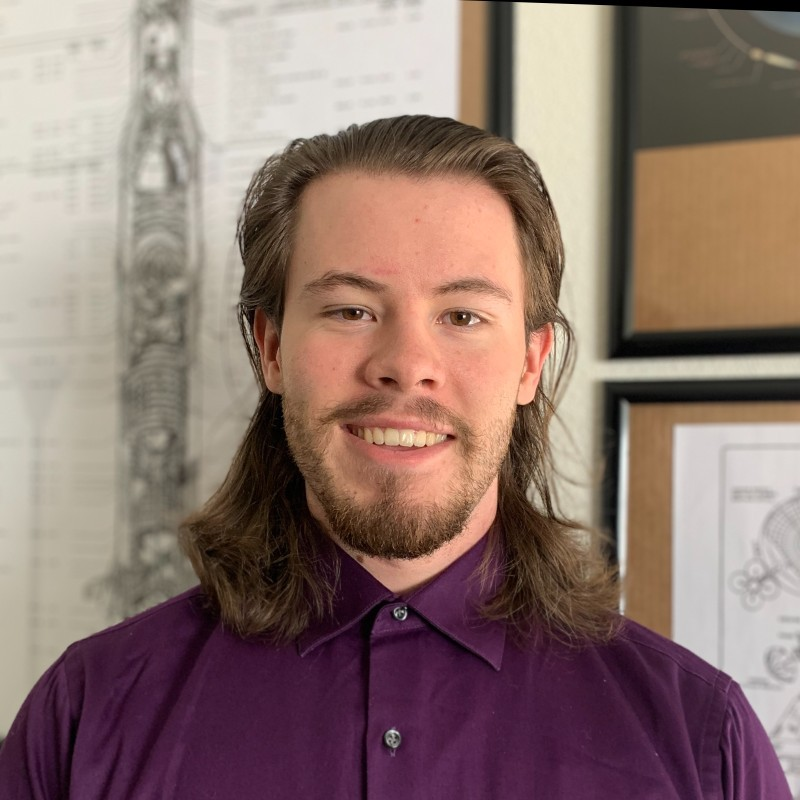
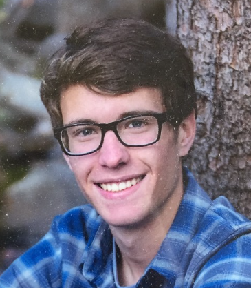
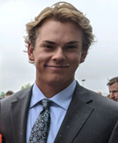
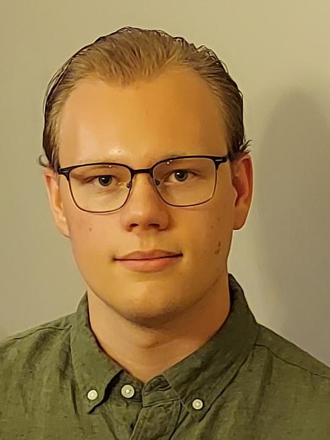
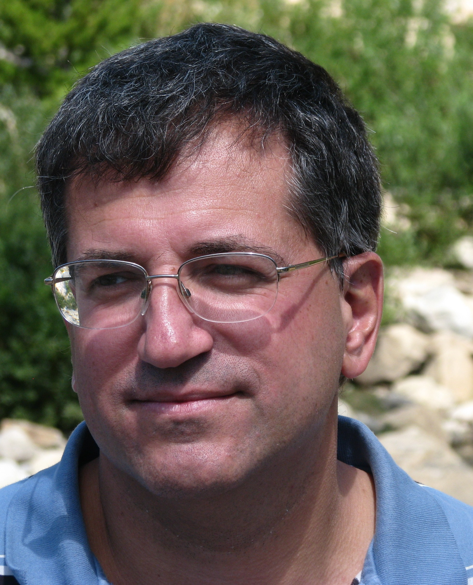

Team Members
Electrical Engineer
 Adam Hulse
Adam is a senior undergraduate at Colorado State University studying electrical engineering with a strong focus in electromagnetics, especially in antennas and RF. A born and raised local to Fort Collins, he enjoys spending his free time in mountains or hanging out with his friends.
Computer Engineer
 Parker Segelhorst
Parker is a computer engineering major at Colorado State University with a strong interest in the mathematics related to linear systems & signals. He other interests are in microcontroller and IoT based at home projects, music, hiking, and reading.
Computer Engineer
 Joshua Barber
My name is Josh Barber and I'm a Computer Engineer working on the CSU ATR. I am currently a Senior with a focus on VLSI design. I currently work in industrial controls but, want to work with radio frequency analysis in the future. Working with ATR I have been able to learn more about how antennas propagate waves and how we measure radiation patterns. I have also learned a lot more about various software we use for antenna analysis. As I continue working in this lab I hope to know the complete functionality of the ATR and what changes we can make in software to increase our scan precision.
Mechanical Engineer
 Owen Dietrich
My name is Owen Dietrich, and I am currently an undergraduate student pursuing a Mechanical Engineering degree at Colorado State University. I appreciated contributing to a project where I can exercise my mechanical ability. Over the years I would spend my spare time restoring trucks and motorcycles while attending school in Monument Colorado. Growing up in Colorado, I developed an early appreciation for space. I frequently visited the Air Force Academy, toured the Kenny Space Center in Florida, and attended shows demonstrating current advanced aircraft technology. Now I currently work on a Bison Ranch through Colorado State University helping maintain and fix the equipment and machinery on the property and providing general animal care for the bison. I am excited to contribute to the Antenna Testing Range team at Colorado State University and further develop the project.
Mechanical Engineer
 Donovan Wells
Undergraduate in Mechanical Engineering with Aerospace concentration
Faculty Advisor
 Branislav Notaros
Branislav M. Notaros is a Professor of Electrical and Computer Engineering in the College of Engineering at Colorado State University, where he conducts research and teaches a variety of courses in electromagnetics, antennas, and microwaves.
He received a Ph.D. degree from the University of Belgrade, Yugoslavia, where he then served as Assistant Professor. He was also Assistant and Associate Professor at the University of Massachusetts Dartmouth. He has published 3 workbooks and more than 100 research papers. He is the author of textbooksElectromagnetics (Prentice Hall, 2010) and MATLAB-Based Electromagnetics(Prentice Hall, 2013), as well as the Electromagnetics Concept Inventory (EMCI).
Prof. Notaros was the recipient of the 2005 IEEE MTT-S Microwave Prize (best-paper award for the IEEE Transactions on Microwave Theory and Techniques), 1999 IEE Marconi Premium (best-paper award for the IEE Proceedings on Microwaves, Antennas and Propagation), 1999 URSI Young Scientist Award, 2005 UMass Dartmouth Scholar of the Year Award, 2004 UMD COE Dean's Recognition Award, 2009, 2010, and 2011 Colorado State University Electrical and Computer Engineering Excellence in Teaching Awards, 2010 Colorado State University College of Engineering George T. Abell Outstanding Teaching and Service Faculty Award, 2012 Colorado State University System Board of Governors Excellence in Undergraduate Teaching Award, and 2013 IEEE Region 5 Outstanding Engineering Educator Award.